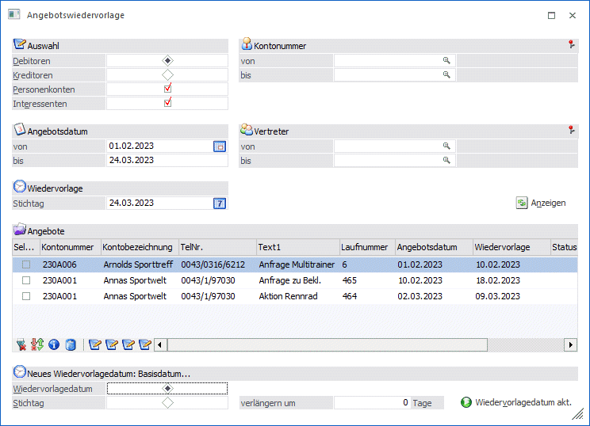
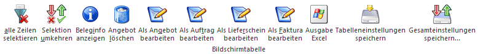
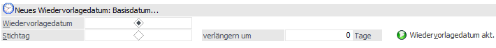
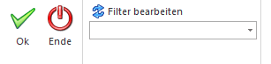

Wie oft werden Angebote/Anfragen an Interessenten oder bereits bestehende Kunden/Lieferanten geschrieben, ohne dass es jemals zu einem Auftrag/einer Bestellung kommt. Dabei bedarf es oft nur einer intensiven Nachbearbeitung z.B. ein zweites Angebot bzw. eine zweite Anfrage. In der WinLine FAKT können Sie die Wiedervorlage von Angeboten/Anfragen über den Programmteil "Wiedervorlage" abwickeln.

Beispiel
Es wird ein Angebot an einen Interessenten mit Wiedervorlage in 14 Tagen geschrieben. Wurde dieses Angebot innerhalb der nächsten 14 Tage nicht in einen Auftrag umgewandelt, kann entsprechend reagiert werden.
Die Angebote/Anfragen werden im Belegerfassen erfasst. Durch Eingabe eines Wiedervorlagedatums können diese Belege später, wenn sie nicht bis zum Wiedervorlagestichtag in einen Auftrag/eine Bestellung übergeführt wurden, noch einmal abgerufen werden.
Achtung
Grundsätzlich wird das Wiedervorlagedatum im Belegerfassen nicht vorbelegt. Wollen Sie dieses Datum vorbelegen, muss in den FAKT-Parametern eine Spanne (in Tagen) eingeben werden, damit das Wiedervorlagedatum mit Tagesdatum (akt. Systemdatum) + Spanne vorbesetzt wird.
Die Wiedervorlagen-Spanne wird im WinLine START im Menüpunkt…
1 Optionen
1 FAKT-Parameter
… in Tagen hinterlegt.
Die Wiedervorlage der Angebote/Anfragen kann jederzeit und beliebig oft abgerufen werden. Die Wiedervorlage der Belege erfolgt im Menüpunkt…
1 Erfassen
1 Wiedervorlage
Legen Sie zunächst fest, ob die noch offenen Angebote (Debitoren) bzw. noch offenen Anfragen (Kreditoren) abgerufen werden sollen. Zusätzlich können Sie entscheiden, ob der Interessenten- und/oder der Personenkontenbereich (= bereits bestehende Kunden bzw. Lieferanten) in die Wiedervorlage miteinbezogen werden soll.
Für die Wiedervorlage von Belegen stehen noch weitere Selektionskriterien zur Verfügung:
Ø Kontonummer von - bis
Geben Sie die erste und letzte Kontonummer jener Personenkonten/Interessentenkonten ein, die in die Auswertung miteinbezogen werden sollen. Bleiben die Eingabefelder von - bis leer, werden alle Personenkonten/Interessenten berücksichtigt.
Ø Vertreter von - bis
Geben Sie die erste und letzte Vertreternummer ein, deren Angebote in die Auswertung miteinbezogen werden sollen. Bleiben die Eingabefelder von - bis leer, werden alle Vertreter berücksichtigt.
Ø Angebots-/Anfragedatum von - bis
Durch Eingabe eines Datums von - bis werden nur jene Belege berücksichtigt, die innerhalb eines bestimmten Zeitraumes geschrieben werden.
Ø Wiedervorlage Stichtag
Es werden alle Belege, die bis zum Wiedervorlage Stichtag für eine Weiterbearbeitung vorgesehen sind, vorgeschlagen. Grundsätzlich wird das Tagesdatum vorgeschlagen. Das Datum kann mit der + - Taste hochgezählt werden.
Tabellenbuttons

Ø alle Zeilen selektieren
Durch Anklicken dieses Buttons werden alle Zeilen in der Tabelle ausgewählt.
Ø Selektion umkehren
Durch Anklicken des Umkehren-Buttons wird die Selektion in der Tabelle ins Gegenteil verkehrt.
Ø Beleginfo anzeigen
Durch Anwählen des Info-Buttons erhalten Sie eine Vorschau des aktivierten Beleges.
Ø Angebot löschen
Durch Anwählen des Löschen-Buttons werden alle selektierten Angebote/Aufträge zum Löschen vorgesehen. Diese Belege sind nach Anwählen des Löschen-Buttons und einer Sicherheitsabfrage mit dem Status "Angebot/Auftrag löschen" versehen.
Ø Belegstufe bearbeiten
Durch Anwählen einer der vier Buttons wird der aktivierte Beleg in der Belegerfassung geöffnet. Dementsprechend, welcher Button gewählt wurde, wird der Beleg in der ausgewählten Belegstufe zur Bearbeitung vorgeschlagen. Bei den Buttons handelt es sich um die Belegstufen in folgender Reihenfolge: Angebot, Auftrag, Lieferschein, Faktura.
Durch Aktivieren der Checkbox in der ersten Spalte der Tabelle können mehrere Belege gleichzeitig aktiviert werden.

Ø Wiedervorlagedatum akt.
Durch Anwählen dieses Buttons wird der Wiedervorlagezeitraum für die selektierten Belege um X Tage verändert. Damit der Zeitraum verlängert wird, müssen die Tage im dafür vorgesehenen Eingabefeld eingetragen werden. Dabei kann entschieden werden, ob sich das neue Wiedervorlagedatum anhand des Stichtages oder anhand des alten Wiedervorlagedatums errechnet.
Hinweis:
Das Wiedervorlagedatum kann auch direkt, durch Eingabe in der Tabelle verändert werden.
Ebenso kann die Spalte "Text1" editiert werden.
Buttons

Ø OK
Durch Anwählen des OK-Buttons werden alle vorgenommenen Änderungen gespeichert
Ø Ende
Durch Anwählen des Ende-Buttons oder Drücken der ESC-Taste werden alle Änderungen verworfen und der Menüpunkt geschlossen.
Ø Filter
Durch Anklicken des Filter-Buttons kann die Anzeige der Belege nach den zur Verfügung stehenden Kriterien eingeschränkt werden.
Ø Anzeigen
Wenn alle Selektionskriterien eingegeben wurden, werden nach Anwählen dieses Buttons die entsprechenden Belege in der Tabelle aufgelistet.